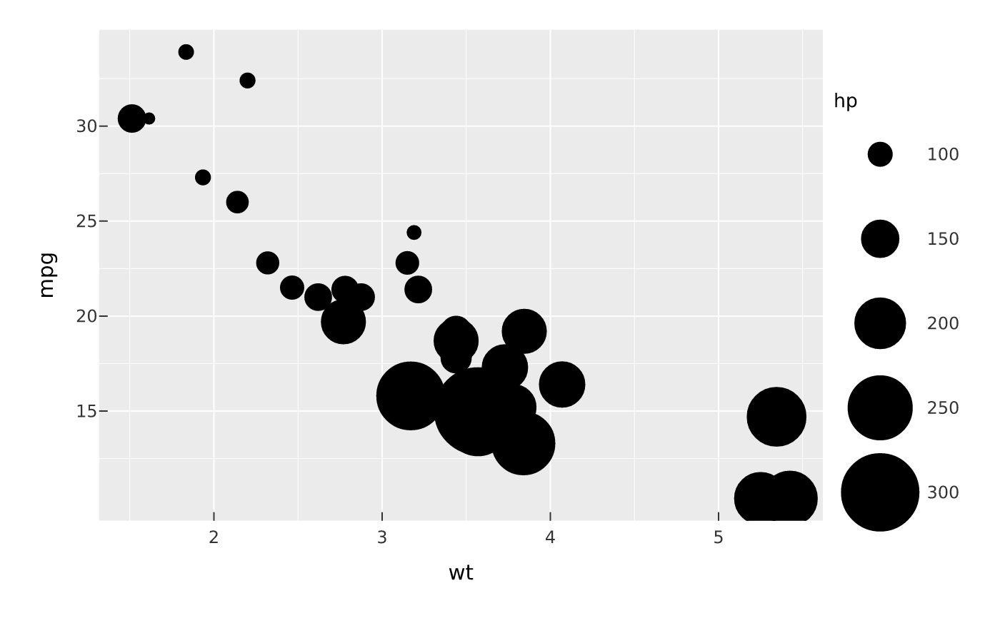
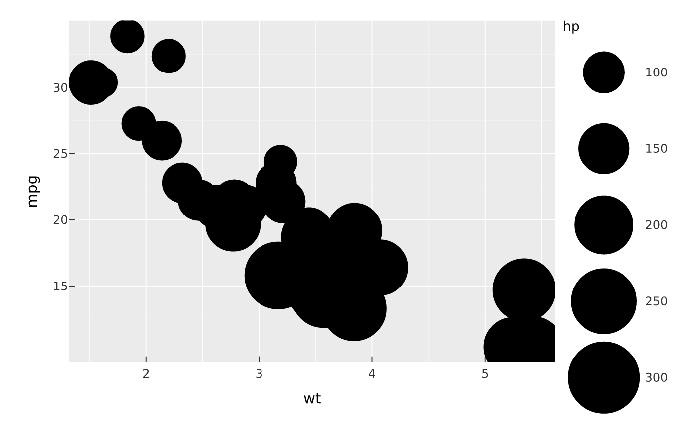
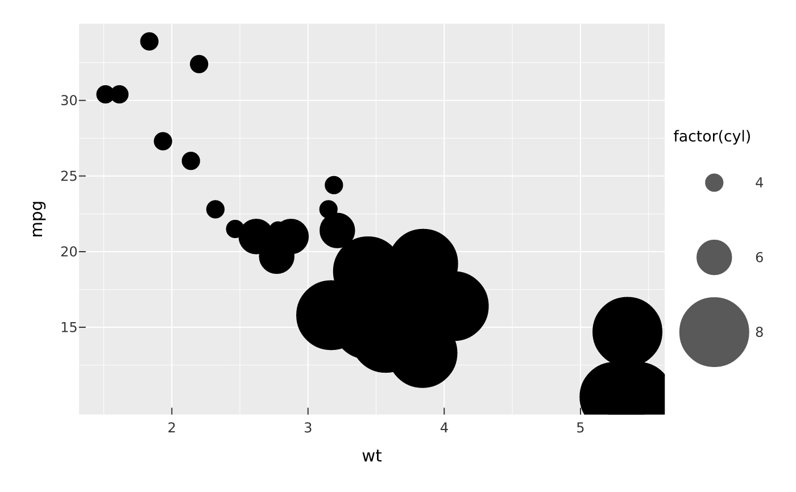

Declare the scale for a mapped size aesthetic: data values map linearly to a
point-size range (in mm). A size legend is drawn automatically.
scale_size_area() maps the data value to the marker's area rather than
its radius, with value 0 at size 0 — the perceptually honest default for
bubble charts (a value twice as large looks twice as big in ink). max_size
is the size (mm) of the largest value.
scale_radius() is ggplot2's radius-proportional size scale. vellumplot's
scale_size() already maps the value linearly to the marker size, so it
is scale_size() with ggplot2's default range = c(1, 6).
scale_size_binned() cuts the variable into classes and gives each class
one size, the size of its centre on an area scale (as ggplot2's
scale_size_binned()); the legend keys the classes. Without breaks the
class boundaries are n.breaks "nice" values inside the data range, and the
outer classes are widened to whole bins, as in ggplot2.
scale_size_manual() sets the size (mm) of each level of a discrete
variable directly via values (named values match levels by name).
scale_size_discrete() / scale_size_ordinal() spread the levels evenly
(by area) over range; the discrete form warns that size is not advised for
an unordered variable, the ordinal form does not.
Usage
scale_size(
plot,
range = NULL,
limits = NULL,
breaks = NULL,
name = NULL,
oob = NULL
)
scale_size_area(plot, max_size = 6, limits = NULL, breaks = NULL, name = NULL)
scale_size_continuous(
plot,
range = NULL,
limits = NULL,
breaks = NULL,
name = NULL,
oob = NULL
)
scale_radius(
plot,
range = c(1, 6),
limits = NULL,
breaks = NULL,
name = NULL,
oob = NULL
)
scale_size_binned(
plot,
range = NULL,
limits = NULL,
breaks = NULL,
labels = NULL,
name = NULL,
n.breaks = NULL
)
scale_size_manual(
plot,
values,
breaks = NULL,
labels = NULL,
name = NULL,
limits = NULL,
na.value = NULL
)
scale_size_discrete(
plot,
range = NULL,
breaks = NULL,
labels = NULL,
name = NULL,
limits = NULL,
na.value = NULL
)
scale_size_ordinal(
plot,
range = NULL,
breaks = NULL,
labels = NULL,
name = NULL,
limits = NULL,
na.value = NULL
)Arguments
- plot
A PlotSpec.
- range
Numeric length-2 output size range in mm, or
NULLfor the defaultc(1, 4).- limits
Numeric length-2 data domain, or
NULLto train from the data.- breaks
Explicit legend breaks, or
NULL.- name
Legend title, or
NULLto derive from the encoding.- oob
What to do with values outside
limits:"censor"(they get no size, so the mark is not drawn),"squish"(the size of the nearest limit),"keep"(extrapolated past the range), or afunction(x, range).NULL(default) keeps them.- max_size
For
scale_size_area(), the point size (mm) of the largest value.- labels
For
scale_size_binned()and the discrete forms, legend labels (one per key, or a function), orNULL.- n.breaks
For
scale_size_binned(), the approximate number of class boundaries (default 5) whenbreaksisNULL.- values
For
scale_size_manual(), the sizes in mm, one per level (or named by level).- na.value
For the discrete forms, the size drawn for missing values, or
NULLto drop them.
Value
The modified PlotSpec.
Details
A factor, character or logical mapped to size gets a discrete scale: the
levels spread evenly (by area) over range, the legend keys are the levels,
and breaks picks which of them it shows. As in ggplot2, an unordered
variable warns that size is not advised for it; an ordered factor does not.
Examples
vplot(mtcars) |> mark_point(x = wt, y = mpg, size = hp) |> scale_size(range = c(1, 8))

vplot(mtcars) |>
mark_point(x = wt, y = mpg, size = hp) |>
scale_size_area(max_size = 10)

vplot(mtcars) |>
mark_point(x = wt, y = mpg, size = factor(cyl)) |>
scale_size_manual(values = c(2, 4, 8))
